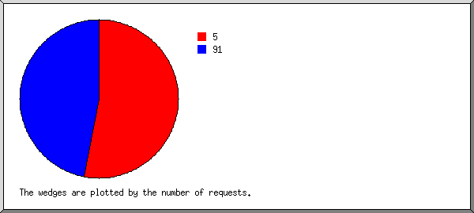

Web Server Statistics for obejor.com.ng
Web Server Statistics for obejor.com.ng
Program started on Mon, Aug 31 2020 at 12:12 PM.
Analyzed requests from Wed, Sep 18 2019 at 9:08 AM to Mon, Aug 31 2020 at 12:05 PM (348.12 days).
Web Server Statistics for obejor.com.ngProgram started on Mon, Aug 31 2020 at 12:12 PM.
Analyzed requests from Wed, Sep 18 2019 at 9:08 AM to Mon, Aug 31 2020 at 12:05 PM (348.12 days).
(Go To: Top | General Summary | Monthly Report | Daily Summary | Hourly Summary | Domain Report | Organization Report | Redirected Referrer Report | Failed Referrer Report | Referring Site Report | Browser Report | Browser Summary | Operating System Report | Status Code Report | File Size Report | File Type Report | Directory Report | Request Report)
Figures in parentheses refer to the 7-day period ending Aug 31 2020 at 12:12 PM.
Successful requests: 420 (4)
Average successful requests per day: 1 (0)
Successful requests for pages: 38 (0)
Failed requests: 19 (0)
Redirected requests: 516,940 (1,642)
Distinct files requested: 34 (133,893)
Distinct hosts served: 206 (20,796)
Data transferred: 9.70 megabytes (132.37 kilobytes)
Average data transferred per day: 28.53 kilobytes (18.91 kilobytes)
(Go To: Top | General Summary | Monthly Report | Daily Summary | Hourly Summary | Domain Report | Organization Report | Redirected Referrer Report | Failed Referrer Report | Referring Site Report | Browser Report | Browser Summary | Operating System Report | Status Code Report | File Size Report | File Type Report | Directory Report | Request Report)
Each unit ( ) represents 1 request for a page.
) represents 1 request for a page.
| month | #reqs | #pages | |
|---|---|---|---|
| Sep 2019 | 60 | 30 |     |
| Oct 2019 | 26 | 0 | |
| Nov 2019 | 46 | 0 | |
| Dec 2019 | 47 | 0 | |
| Jan 2020 | 51 | 0 | |
| Feb 2020 | 37 | 2 | |
| Mar 2020 | 30 | 0 | |
| Apr 2020 | 14 | 0 | |
| May 2020 | 43 | 0 | |
| Jun 2020 | 21 | 0 | |
| Jul 2020 | 10 | 0 | |
| Aug 2020 | 35 | 6 | |
Busiest month: Sep 2019 (30 requests for pages).
(Go To: Top | General Summary | Monthly Report | Daily Summary | Hourly Summary | Domain Report | Organization Report | Redirected Referrer Report | Failed Referrer Report | Referring Site Report | Browser Report | Browser Summary | Operating System Report | Status Code Report | File Size Report | File Type Report | Directory Report | Request Report)
Each unit () represents 1 request for a page.
| day | #reqs | #pages | |
|---|---|---|---|
| Sun | 36 | 0 | |
| Mon | 74 | 0 | |
| Tue | 71 | 0 | |
| Wed | 88 | 30 | |
| Thu | 65 | 2 | |
| Fri | 44 | 0 | |
| Sat | 42 | 6 | |
(Go To: Top | General Summary | Monthly Report | Daily Summary | Hourly Summary | Domain Report | Organization Report | Redirected Referrer Report | Failed Referrer Report | Referring Site Report | Browser Report | Browser Summary | Operating System Report | Status Code Report | File Size Report | File Type Report | Directory Report | Request Report)
Each unit () represents 1 request for a page.
| hour | #reqs | #pages | |
|---|---|---|---|
| 0 | 85 | 0 | |
| 1 | 3 | 0 | |
| 2 | 1 | 0 | |
| 3 | 3 | 2 | |
| 4 | 9 | 4 | |
| 5 | 2 | 0 | |
| 6 | 1 | 0 | |
| 7 | 6 | 0 | |
| 8 | 25 | 0 | |
| 9 | 65 | 23 | |
| 10 | 43 | 0 | |
| 11 | 28 | 1 | |
| 12 | 26 | 0 | |
| 13 | 33 | 2 | |
| 14 | 34 | 4 | |
| 15 | 26 | 0 | |
| 16 | 12 | 0 | |
| 17 | 4 | 0 | |
| 18 | 3 | 0 | |
| 19 | 2 | 0 | |
| 20 | 7 | 2 | |
| 21 | 0 | 0 | |
| 22 | 1 | 0 | |
| 23 | 1 | 0 |
(Go To: Top | General Summary | Monthly Report | Daily Summary | Hourly Summary | Domain Report | Organization Report | Redirected Referrer Report | Failed Referrer Report | Referring Site Report | Browser Report | Browser Summary | Operating System Report | Status Code Report | File Size Report | File Type Report | Directory Report | Request Report)
Listing domains, sorted by the amount of traffic.
| #reqs | %bytes | domain |
|---|---|---|
| 420 | 100% | [unresolved numerical addresses] |
(Go To: Top | General Summary | Monthly Report | Daily Summary | Hourly Summary | Domain Report | Organization Report | Redirected Referrer Report | Failed Referrer Report | Referring Site Report | Browser Report | Browser Summary | Operating System Report | Status Code Report | File Size Report | File Type Report | Directory Report | Request Report)

Listing organizations, sorted by the number of requests.
| #reqs | %bytes | organization |
|---|---|---|
| 155 | 50.67% | 41 |
| 77 | 22.71% | 197.210 |
| 55 | 18.32% | 102 |
| 49 | 0.04% | 5 |
| 36 | 0.03% | 91 |
| 10 | 2.68% | 193.27 |
| 10 | 0.06% | 54 |
| 6 | 0.04% | 3 |
| 5 | 1.67% | 129.205 |
| 5 | 1.67% | 66.249 |
| 3 | 1.00% | 105 |
| 2 | 0.09% | 139.162 |
| 2 | 0.01% | 104 |
| 2 | 0.01% | 204.155 |
| 1 | 0.33% | 197.211 |
| 1 | 0.33% | 190.112 |
| 1 | 0.34% | 18 |
(Go To: Top | General Summary | Monthly Report | Daily Summary | Hourly Summary | Domain Report | Organization Report | Redirected Referrer Report | Failed Referrer Report | Referring Site Report | Browser Report | Browser Summary | Operating System Report | Status Code Report | File Size Report | File Type Report | Directory Report | Request Report)

Listing the top 30 referring URLs by the number of redirected requests, sorted by the number of redirected requests.
(Go To: Top | General Summary | Monthly Report | Daily Summary | Hourly Summary | Domain Report | Organization Report | Redirected Referrer Report | Failed Referrer Report | Referring Site Report | Browser Report | Browser Summary | Operating System Report | Status Code Report | File Size Report | File Type Report | Directory Report | Request Report)
Listing referring URLs, sorted by the number of failed requests.
| #reqs | URL |
|---|---|
| 3 | http://obejor.com.ng/ |
(Go To: Top | General Summary | Monthly Report | Daily Summary | Hourly Summary | Domain Report | Organization Report | Redirected Referrer Report | Failed Referrer Report | Referring Site Report | Browser Report | Browser Summary | Operating System Report | Status Code Report | File Size Report | File Type Report | Directory Report | Request Report)
Listing referring sites, sorted by the number of requests.
| #reqs | site |
|---|---|
| 2 | http://www.obejor.com.ng/ |
(Go To: Top | General Summary | Monthly Report | Daily Summary | Hourly Summary | Domain Report | Organization Report | Redirected Referrer Report | Failed Referrer Report | Referring Site Report | Browser Report | Browser Summary | Operating System Report | Status Code Report | File Size Report | File Type Report | Directory Report | Request Report)

Listing browsers with at least 1 request for a page, sorted by the number of requests for pages.
| #reqs | #pages | browser |
|---|---|---|
| 10 | 10 | Mozilla/5.0 (compatible; SurdotlyBot/1.0; +http://sur.ly/bot.html) |
| 5 | 5 | Mozilla/5.0 (Windows NT 10.0; Win64; x64; rv:69.0) Gecko/20100101 Firefox/69.0 |
| 9 | 5 | Mozilla/5.0 (X11; U; Linux i686; en-US) AppleWebKit/532.0 (KHTML, like Gecko) Chrome/4.0.207.0 Safari/532.0 |
| 5 | 5 | Mozilla/5.0 (X11; Linux x86_64) AppleWebKit/537.36 (KHTML, like Gecko) HeadlessChrome/78.0.3882.0 Safari/537.36 |
| 15 | 2 | Mozilla/5.0 (Windows NT 10.0; Win64; x64; rv:70.0) Gecko/20100101 Firefox/70.0 |
| 2 | 2 | Mozilla/5.0 (X11; Linux x86_64) AppleWebKit/534.34 (KHTML, like Gecko) Qt/4.8.2 Safari/534.34 |
| 2 | 2 | Mozilla/5.0 (Windows NT 6.1; WOW64; rv:27.0) Gecko/20100101 Firefox/27.0 |
| 4 | 2 | Mozilla/5.0 (compatible; Nmap Scripting Engine; https://nmap.org/book/nse.html) |
| 6 | 1 | Mozilla/5.0 (Windows NT 6.2; Win64; x64) AppleWebKit/537.36 (KHTML, like Gecko) Chrome/76.0.3809.132 Safari/537.36 |
| 1 | 1 | Mozilla/5.0 (Linux; Android 4.3; Galaxy Nexus Build/JWR67B) AppleWebKit/537.36 (KHTML, like Gecko) Chrome/37.0.2062.117 Mobile Safari/537.36 |
| 1 | 1 | Mozilla/5.0 (Windows NT 10.0; Win64; x64) AppleWebKit/537.36 (KHTML, like Gecko) Chrome/76.0.3809.132 Safari/537.36 |
| 1 | 1 | Mozilla/5.0 (Windows NT 10.0; Win64; x64) AppleWebKit/537.36 (KHTML, like Gecko) Chrome/77.0.3865.75 Safari/537.36 |
| 1 | 1 | Mozilla/4.0 (compatible; MSIE 4.0; Windows 95; .NET CLR 1.1.4322; .NET CLR 2.0.50727) |
| 358 | 0 | [not listed: 72 browsers] |
(Go To: Top | General Summary | Monthly Report | Daily Summary | Hourly Summary | Domain Report | Organization Report | Redirected Referrer Report | Failed Referrer Report | Referring Site Report | Browser Report | Browser Summary | Operating System Report | Status Code Report | File Size Report | File Type Report | Directory Report | Request Report)

Listing browsers with at least 1 request for a page, sorted by the number of requests for pages.
| # | #reqs | #pages | browser |
|---|---|---|---|
| 1 | 183 | 16 | Safari |
| 172 | 9 | Safari/537 | |
| 9 | 5 | Safari/532 | |
| 2 | 2 | Safari/534 | |
| 2 | 14 | 12 | Netscape (compatible) |
| 3 | 137 | 9 | Firefox |
| 5 | 5 | Firefox/69 | |
| 2 | 2 | Firefox/27 | |
| 15 | 2 | Firefox/70 | |
| 4 | 1 | 1 | MSIE |
| 1 | 1 | MSIE/4 | |
| 85 | 0 | [not listed: 1 browser] |
(Go To: Top | General Summary | Monthly Report | Daily Summary | Hourly Summary | Domain Report | Organization Report | Redirected Referrer Report | Failed Referrer Report | Referring Site Report | Browser Report | Browser Summary | Operating System Report | Status Code Report | File Size Report | File Type Report | Directory Report | Request Report)

Listing operating systems, sorted by the number of requests for pages.
| # | #reqs | #pages | OS |
|---|---|---|---|
| 1 | 267 | 13 | Windows |
| 192 | 9 | Windows NT | |
| 74 | 3 | Unknown Windows | |
| 1 | 1 | Windows 95 | |
| 2 | 51 | 13 | Unix |
| 51 | 13 | Linux | |
| 3 | 99 | 12 | OS unknown |
| 4 | 3 | 0 | Macintosh |
(Go To: Top | General Summary | Monthly Report | Daily Summary | Hourly Summary | Domain Report | Organization Report | Redirected Referrer Report | Failed Referrer Report | Referring Site Report | Browser Report | Browser Summary | Operating System Report | Status Code Report | File Size Report | File Type Report | Directory Report | Request Report)

Listing status codes, sorted numerically.
| #reqs | status code |
|---|---|
| 420 | 200 OK |
| 3 | 301 Document moved permanently |
| 516937 | 302 Document found elsewhere |
| 1 | 403 Access forbidden |
| 18 | 404 Document not found |
(Go To: Top | General Summary | Monthly Report | Daily Summary | Hourly Summary | Domain Report | Organization Report | Redirected Referrer Report | Failed Referrer Report | Referring Site Report | Browser Report | Browser Summary | Operating System Report | Status Code Report | File Size Report | File Type Report | Directory Report | Request Report)

| size | #reqs | %bytes |
|---|---|---|
| 0 | 3 | |
| 1B- 10B | 0 | |
| 11B- 100B | 85 | 0.07% |
| 101B- 1kB | 30 | 0.19% |
| 1kB- 10kB | 3 | 0.10% |
| 10kB-100kB | 299 | 99.64% |
(Go To: Top | General Summary | Monthly Report | Daily Summary | Hourly Summary | Domain Report | Organization Report | Redirected Referrer Report | Failed Referrer Report | Referring Site Report | Browser Report | Browser Summary | Operating System Report | Status Code Report | File Size Report | File Type Report | Directory Report | Request Report)

Listing extensions with at least 0.1% of the traffic, sorted by the amount of traffic.
| #reqs | %bytes | extension |
|---|---|---|
| 291 | 96.65% | [no extension] |
| 38 | 2.19% | [directories] |
| 2 | 0.67% | .php [PHP] |
| 1 | 0.34% | .0-pie-16mp-5mp-16mp-4g-lte-dual-sim-smartphone-4000mah-battery |
| 88 | 0.15% | [not listed: 3 extensions] |
(Go To: Top | General Summary | Monthly Report | Daily Summary | Hourly Summary | Domain Report | Organization Report | Redirected Referrer Report | Failed Referrer Report | Referring Site Report | Browser Report | Browser Summary | Operating System Report | Status Code Report | File Size Report | File Type Report | Directory Report | Request Report)

Listing directories with at least 0.01% of the traffic, sorted by the amount of traffic.
| #reqs | %bytes | directory |
|---|---|---|
| 321 | 97.16% | [root directory] |
| 5 | 1.00% | /webmail/ |
| 3 | 1.00% | /controlpanel/ |
| 1 | 0.33% | /cpanel/ |
| 1 | 0.33% | /kpanel/ |
| 2 | 0.09% | /img-sys/ |
| 85 | 0.07% | /.well-known/ |
| 1 | 0.02% | /mailman/ |
| 1 | [not listed: 1 directory] |
(Go To: Top | General Summary | Monthly Report | Daily Summary | Hourly Summary | Domain Report | Organization Report | Redirected Referrer Report | Failed Referrer Report | Referring Site Report | Browser Report | Browser Summary | Operating System Report | Status Code Report | File Size Report | File Type Report | Directory Report | Request Report)

Listing files with at least 20 requests, sorted by the number of requests.
| #reqs | %bytes | last time | file |
|---|---|---|---|
| 269 | 89.63% | Aug/27/20 10:05 AM | /cpanel |
| 30 | 0.19% | Sep/18/19 2:16 PM | / |
| 121 | 10.18% | Aug/27/20 11:11 AM | [not listed: 29 files] |